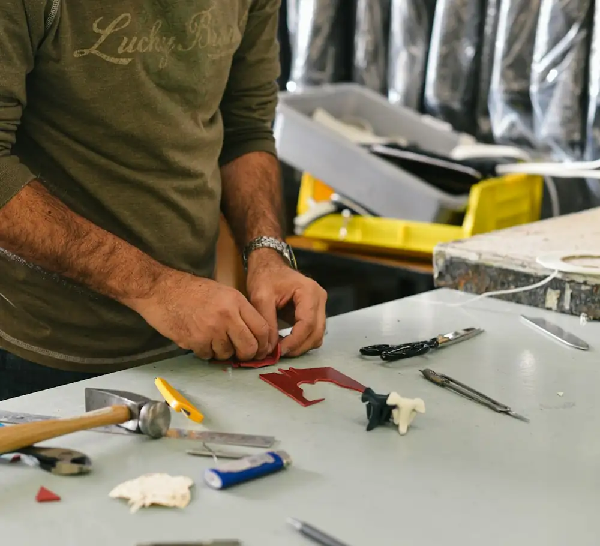
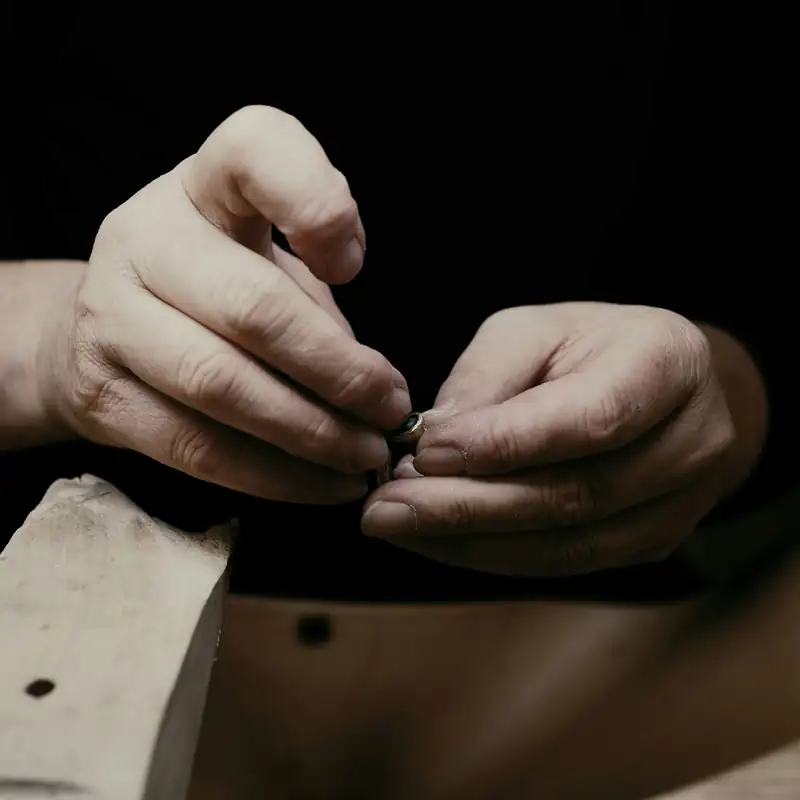
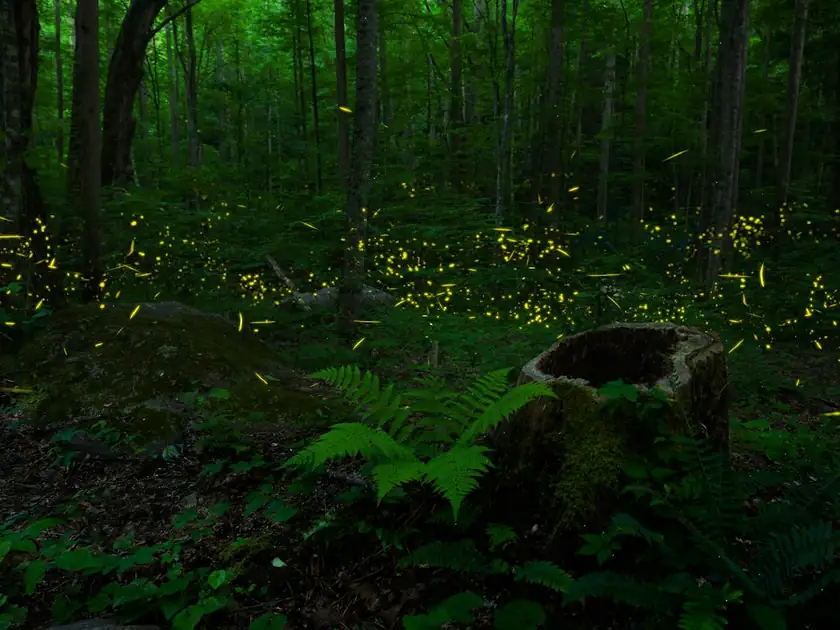
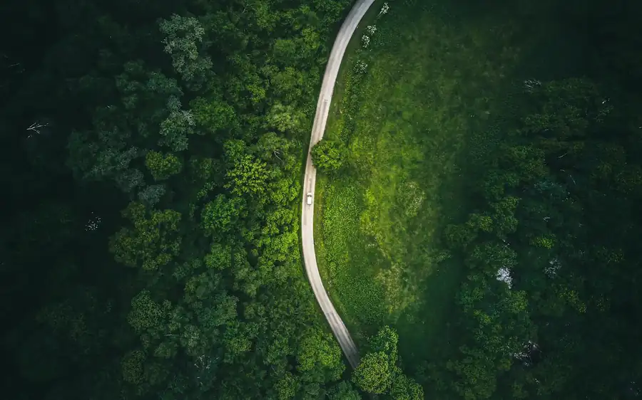
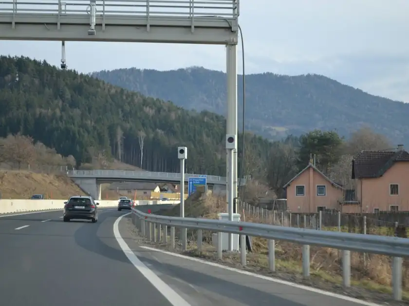
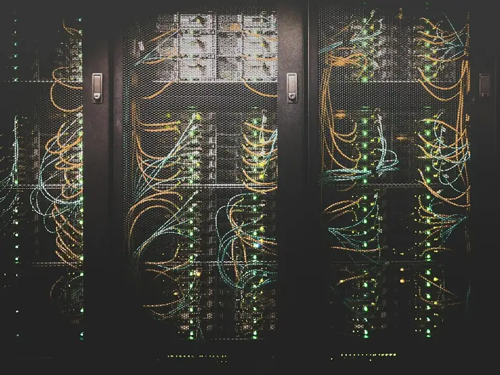

active(01)
Stop Cattenom
La centrale nucléaire de Cattenom représente un risque inacceptable pour le Luxembourg. Nous exigeons sa fermeture immédiate.
Signer la pétition
Le Mouvement Écologique défend la nature, le climat et une société plus juste — par l'action de terrain, le plaidoyer politique et la mobilisation citoyenne.

Association indépendante, le Mouvement Écologique agit depuis 1968 pour un développement durable au Luxembourg.
La centrale nucléaire de Cattenom représente un risque inacceptable pour le Luxembourg. Nous exigeons sa fermeture immédiate.
Signer la pétitionLa pollution lumineuse menace la biodiversité nocturne. Rejoignez notre campagne pour protéger les lucioles et la noirceur du ciel.
Participer
Le droit à la réparation est essentiel pour une économie circulaire. Nous demandons une législation ambitieuse au niveau européen.
En savoir plus
 Vidéo · 4:12
Stop Cattenom : pourquoi la centrale reste un risque
Vidéo · 4:12
Stop Cattenom : pourquoi la centrale reste un risque
 Podcast · 28 min
Nuits noires : la pollution lumineuse et la biodiversité
Podcast · 28 min
Nuits noires : la pollution lumineuse et la biodiversité

Galerie · 36 photos Repair Café : réparer au lieu de jeter Vidéo · 2:48
Mousses et lichens : les sentinelles de nos forêts
Vidéo
Stop Cattenom : pourquoi la centrale reste un risque
Vidéo · 2:48
Mousses et lichens : les sentinelles de nos forêts
Vidéo
Stop Cattenom : pourquoi la centrale reste un risque

Podcast Nuits noires : la pollution lumineuse et la biodiversité Galerie Repair Café : une journée pour réparer au lieu de jeter
Vidéo Mousses et lichens : les sentinelles de nos forêts
Publication Kéisécker Info : mobilité douce, nos propositions
Vidéo Data centers : le vrai coût énergétique
Vidéo
Stop Cattenom : pourquoi la centrale reste un risque
Podcast
Économie circulaire : du discours aux actes